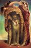
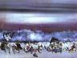
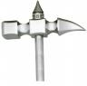
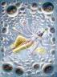

Ora, io dico
apri gli occhi e’ gia’ SAI CHE NON VA TUTTO BENE..
ti alzi ti guardi allo specchio e ti senti
la PEGGIORE CREAZIONE DI ERNST

IMMERSA in un fottuto e surreale barattolo di venirce AZZURRO MAGRITTE..
Hai passato la notte NEL PIU’ STRONZO SOGNO DI TANGUY
circondato da INFORMI FORME DEFORMI.

Guardi sul tavolo due girasoli, un paio di scarpe da lavoro nel terrazzino assolato,
NON SO PERCHE’ ti tornano in mente parole di heiddeger e la sua comunione fluida con van gogh
nella ricerca dell’origine dell’opera d’arte.. noti un pacchetto di sigarette con naturalezza
ne prendi una e l’accendi, dopo due tiri RICORDI che TU NON FUMI e CHE FA SCHIFO.
Senti nella bocca la stessa sensazione che deve aver provato jung
quando svegliandosi in un sogno lucido scorge
UN’ENORME ECTOPLASMA A FORMA DI ORGANISMO MONOCELLULARE
ai piedi del suo letto,
e SENZA FARE UNA PIEGA, CI INTRATTIENE una conversazione del piu’ e del meno.
Come dicevo l’altra sera,
SE TI SVEGLI e NOTI UNA FOTTUTA AMEBA AI PIEDI DEL TUO LETTO
e putacaso ci PARLI ANCHE,
FORSE E’ IL CASO CHE NON LO RACCONTI A NESSUNO.
e POI soprattutto COSA CAZZO CI FANNO delle sigarette SUL MIO TAVOLO ?
Ma questa, come dice conan quando si e’ ROTTO LA MINCHIA di fare il barbaro e il distruttore,
QUESTA E’ UN’ALTRA STORIA..
Semplicemente ti senti SCONNESSO dalla vena cava e sei SENZA CAVO.
Decidi che e’ il caso di non pensarci e inizi a leggere, MA, dopo qualche pagina ti rendi
conto che e’ il LIBRO che TI STA LEGGENDO, e questa inversioni di ruoli ora
NON E’ AFFATTO PIACEVOLE.
Come diceva merleau-ponty “la scienza rinuncia ad abitare le cose”, non le vive tra la pelle
e lo stomaco, ha dimenticato il nervo e la carne viva.
In questo momento CAPISCO PERFETTAMENTE PERCHE’
Fortunatamente l’amico coltrane illumina la via con quel flusso unico, la cristallina autoevidenza,
quella vibrazione psico-intuitiva che interessa sincronicamente il sinolo in toto.. LA MUSICA.
Mi sento di colpo IL CAMMELLO, non un semplice CAMMELLO,
PROPRIO LUI,
QUEL cammello che zarathustra conosce MOLTO BENE.
Facendo due rapidi calcoli, direi che mi aspettano ALMENO UN PAIO di metamorfosi
prima di poter essere davvero un bambino.
Ed allora SLABBRO di EBBRO GOAZZO, PENSO ergo SUCO FORTE.
Si fa presto a proclamare “una filosofia col martello”,
ma quando IL MARTELLO E’ PROPRIO SOPRA
i tuoi genitali..

Nella BRHADARANYAKA UPANISHAD, un libretto scritto da quattro stronzi circa un paio d’ore fa’, si legge
che l’Atman o Maitreyi dev’essere veduto, udito, inteso, meditato. Ed ancora, che chi avra’ veduto, udito,
inteso e meditato l’Atman, avra’ invero conosciuto tutto l’universo.
Di questa persona accade come di un tamburo che venga suonato: non si puo’ afferrare il suono che ne esce;
ma se si afferra il tamburo o il sonatore, resta preso anche il suono.
ORA,
MANNAGGIA A VISNU’, GRISU’ e tutti e QUARANTA i ladroni che TI SI GIOCANO A TRESSETTE
PERCHE’?
Stracazzo PERCHE’ afferro il tamburo MA QUANDO NON LO SUONA NESSUNO, o mi ritrovo con di fianco
il SONATORE, CHE DORME sognando BRIGITTA BULGARI in “ANAL MEDITATION” ?

Chiedero’ consiglio all’ORACOLO DI DELPHI che e’ sul gas e sta borbottando, UN’ATTIMO.
Eccomi di ritorno, ho parlato con l’oracolo e mi ha dato un responso chiaro:
“non ti preoccupare e’ normale, sei un coglione!” o forse ha detto CIGLIONE?
si HA DECISAMENTE detto “sei un CIGLIONE”.
AH, per venire incontro alle vostre facolta’ mentali, un minimo di lezione di spagnolo:
in spagnolo CIGLIONE si dice EL SEJON che deriva dal latino e significa SAGGEZZA,
ma SENZA IL SENSO DEL SACRO.
Saluto gli amici del bar, corrado, MIMI’ E COCO’